「テーマ」を変更する¶
「テーマ」とは¶
Sphinx で作成した文書の「見た目」を決めるものが「テーマ」です。この「テーマ」を変更すると「見た目」も変更になります。 Sphinx で作成した文書の「見た目」は「テーマ」で決まります。
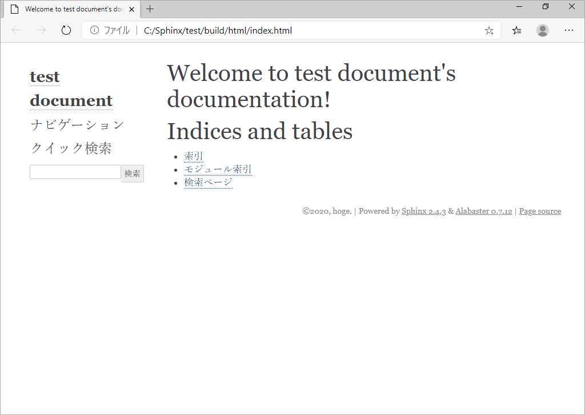テーマごとに名前が付いており、上図のテーマ名は「 alabaster 」です。 Sphinx が用意しているテーマ（ビルトインテーマ）は次の 10 種類です。いくつかのテーマは「見た目」以外に、複数のオプションを設定できます。
alabaster ← デフォルトのテーマ¶
classic¶
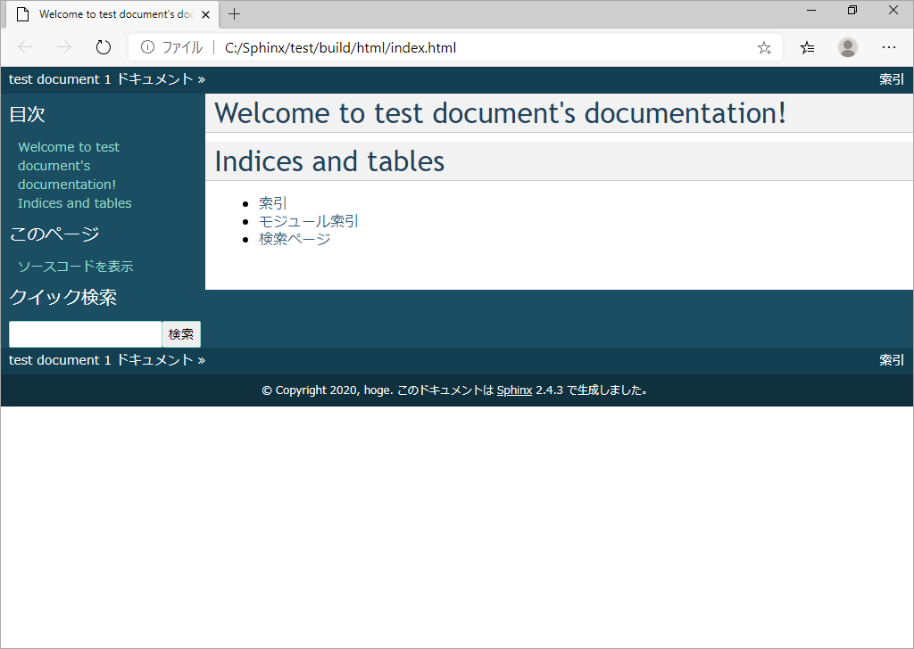sphinxdoc¶
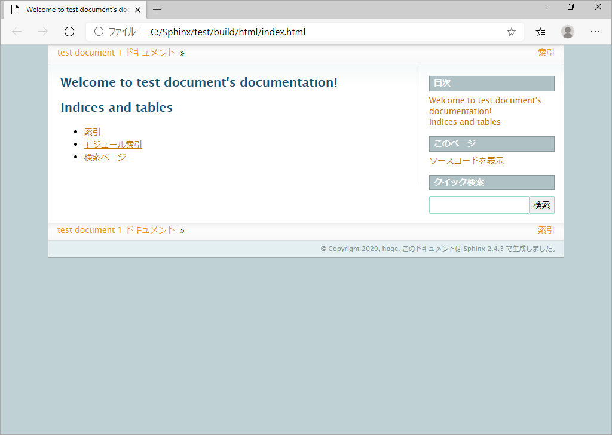scrolls¶
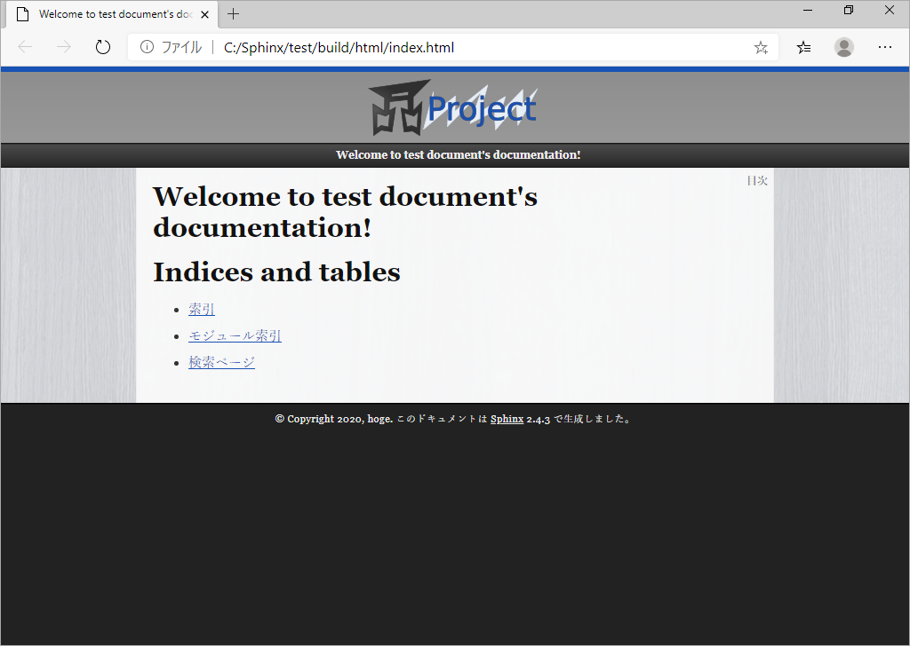agogo¶
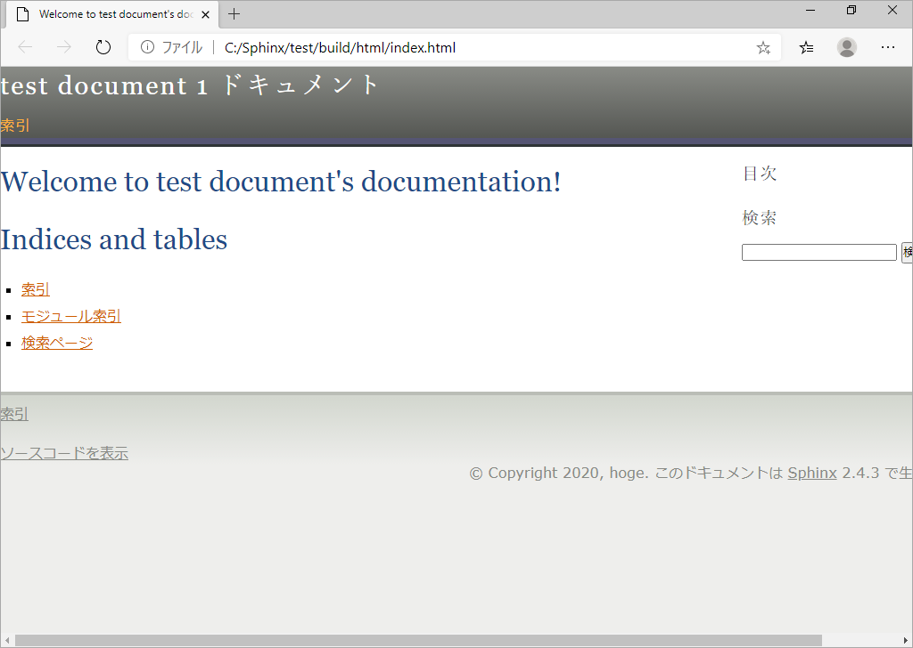traditional¶
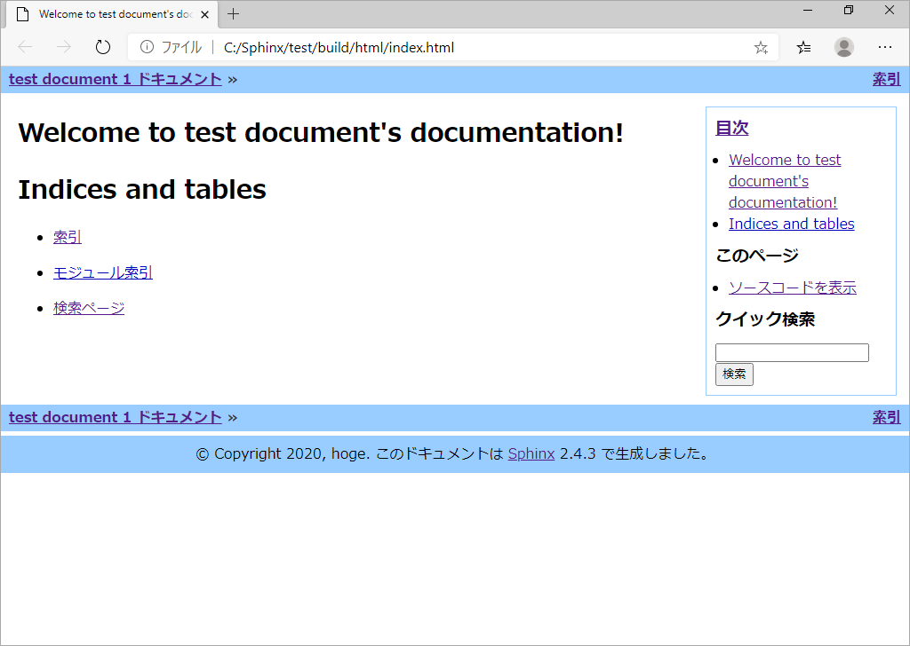nature¶
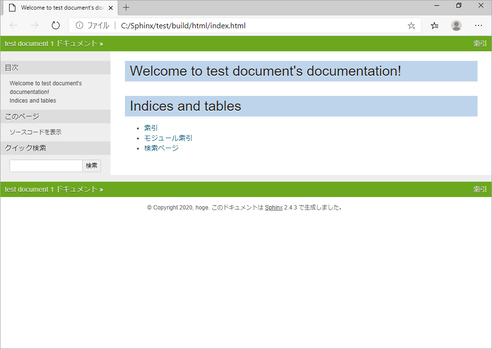haiku¶
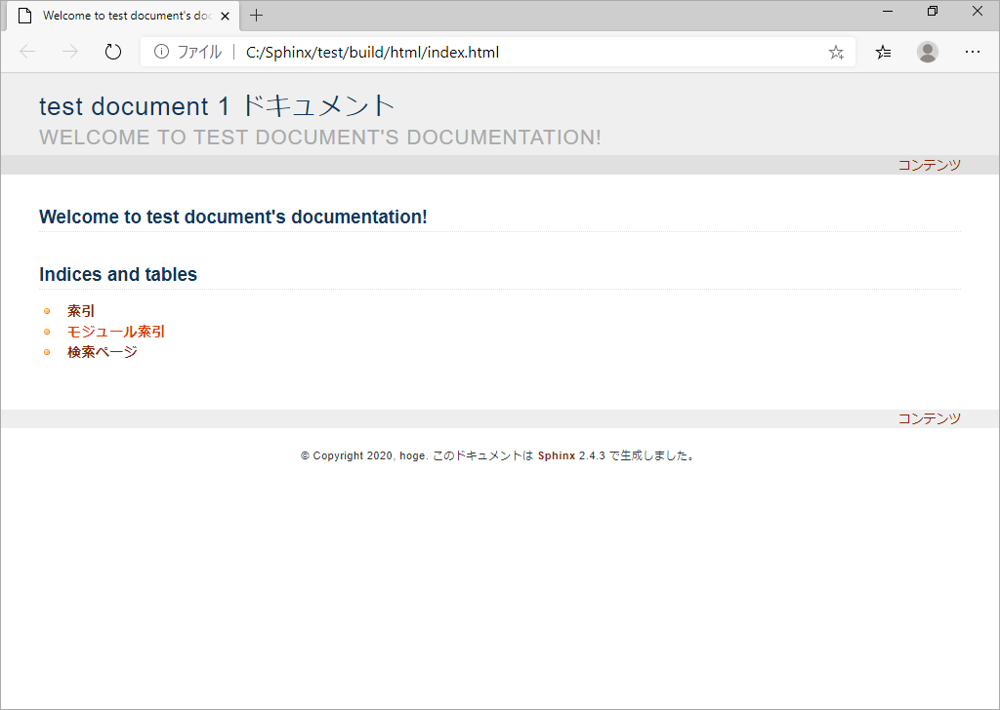pyramid¶
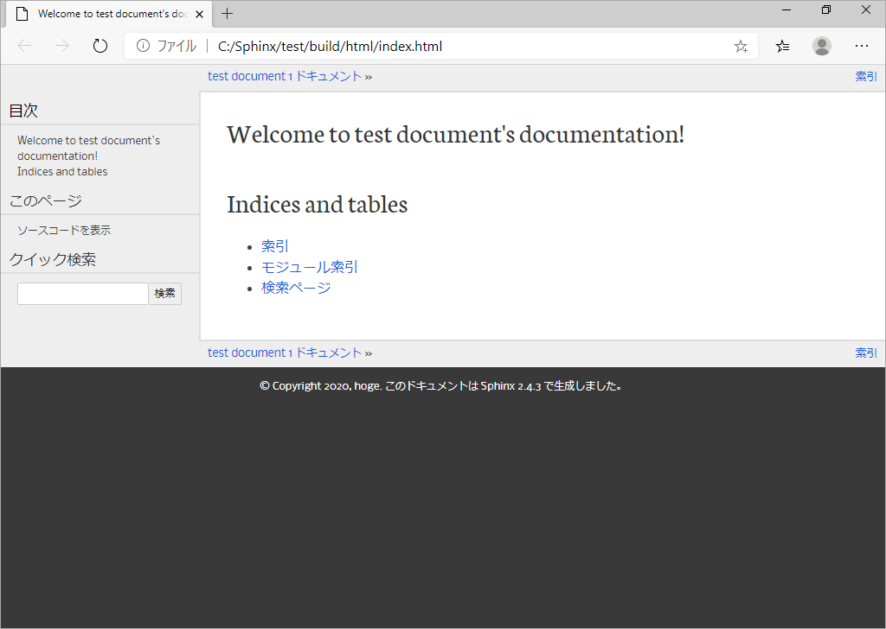bizstyle¶
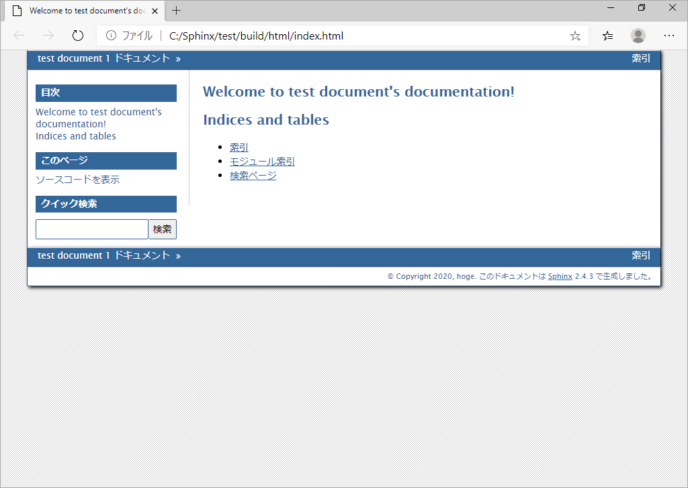「テーマ」の変更方法¶
"conf.py" ファイル内のhtml_themeで使用するテーマを指定します。
"alabaster" から "classic" にするには次のように変更・保存します。必要に応じて、テーマのオプション設定を行います。
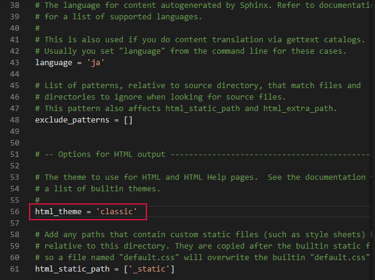その後、"make html"を実行して HTML を再作成します。
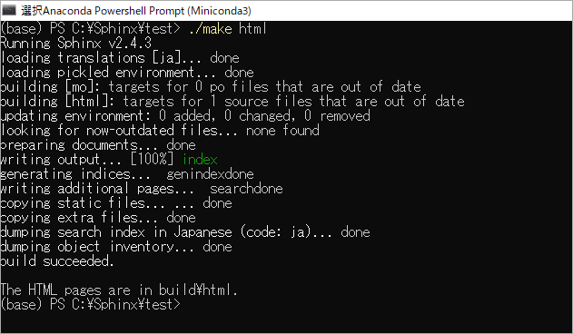Sphinx Themes¶
Sphinx Themesに多くのテーマが掲載されています。
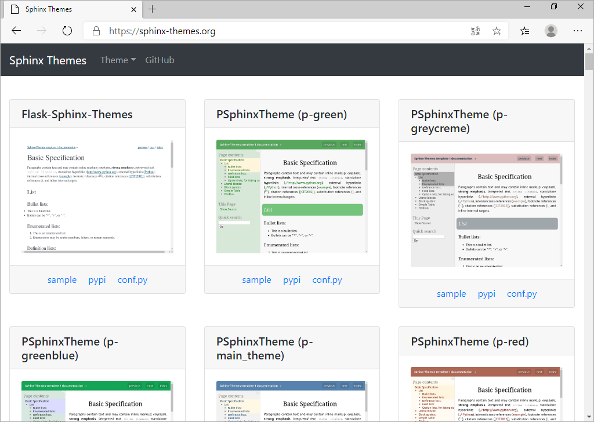各テーマには 3 つのリンクが設定されています。
- sample
サンプル表示を確認できます。
- pypi
インストール方法などの説明が記載されています。
- conf.py
"conf.py" ファイルの設定サンプルが記載されています。